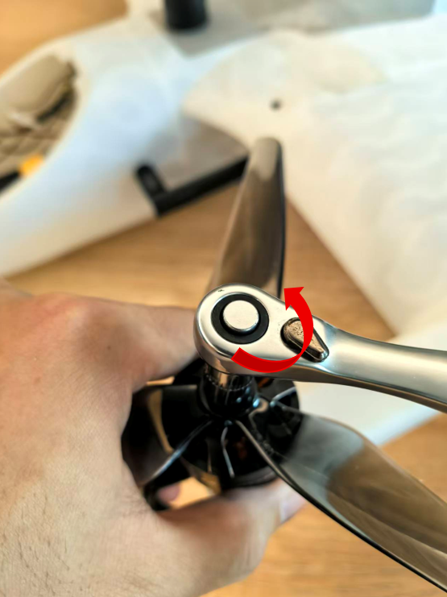
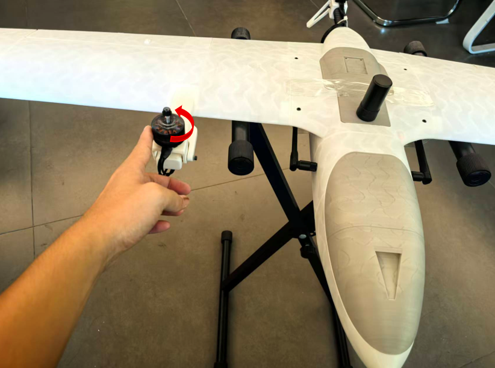
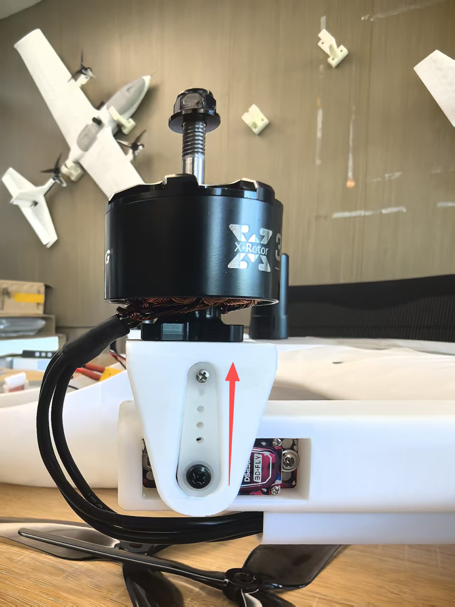
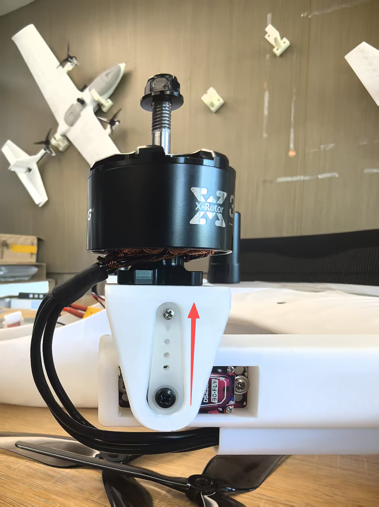
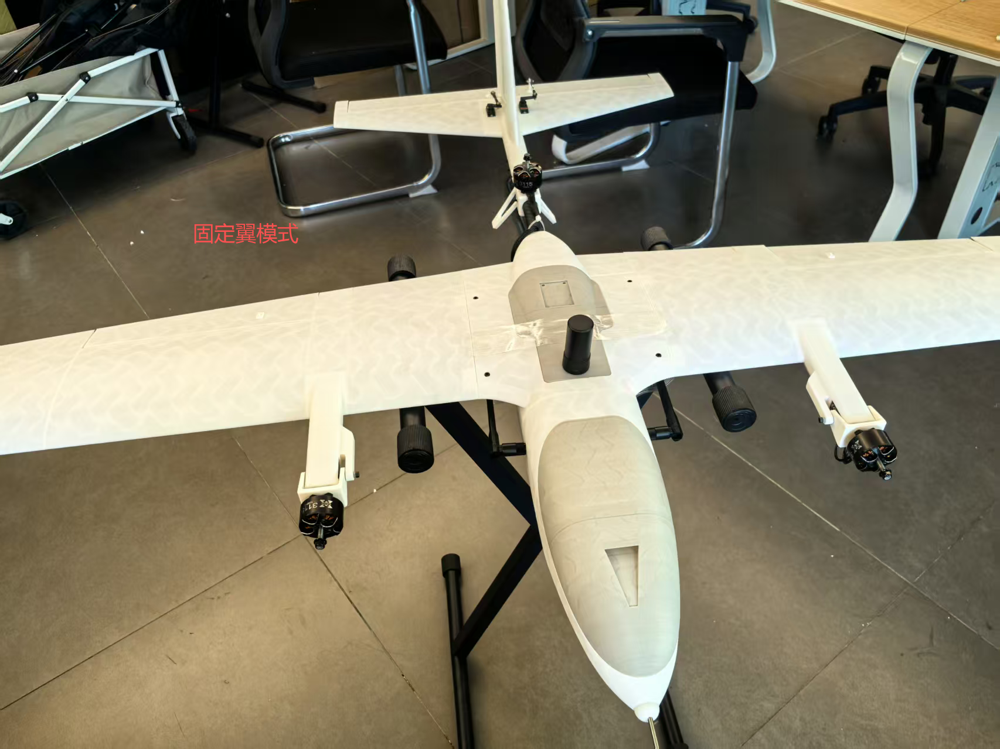
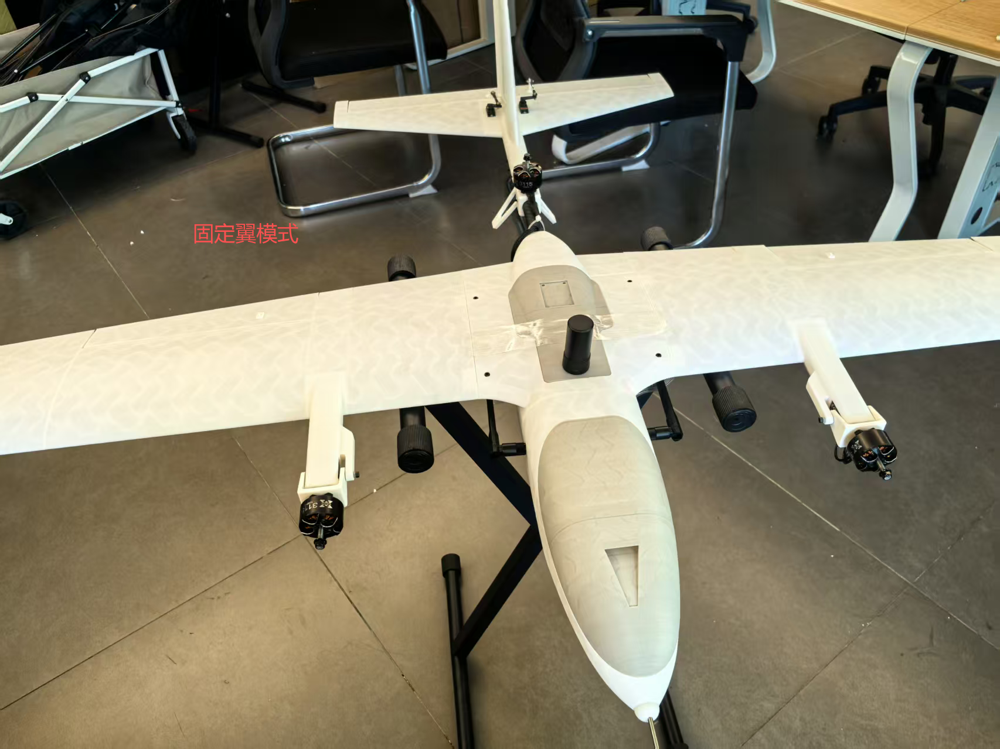
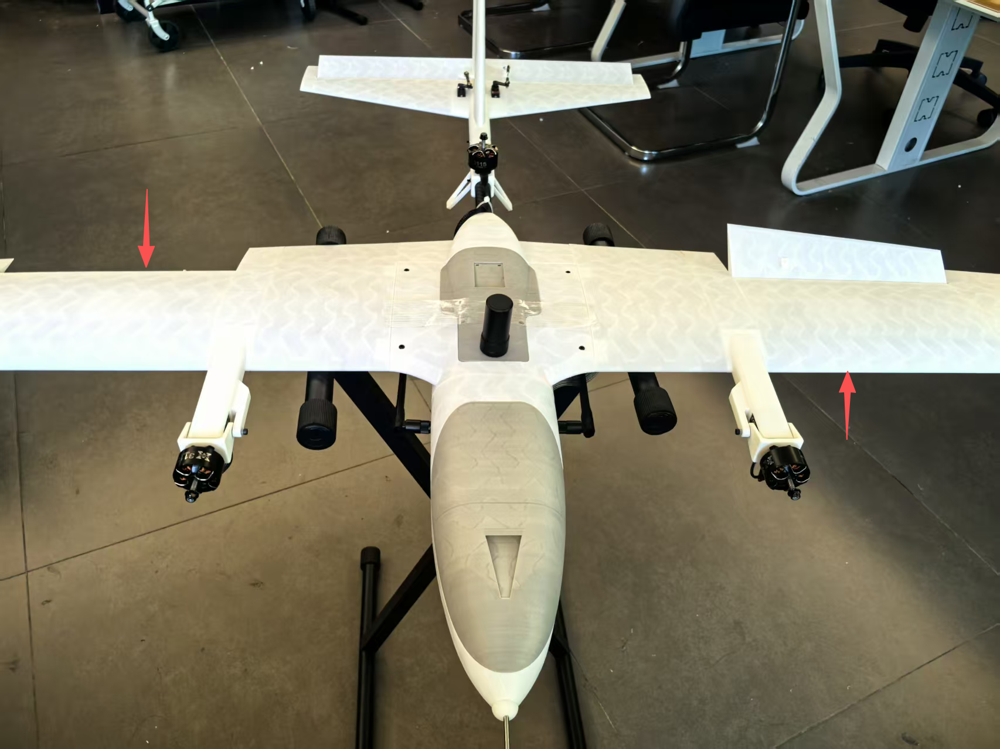
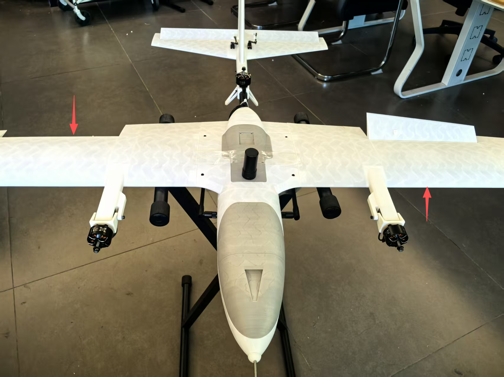
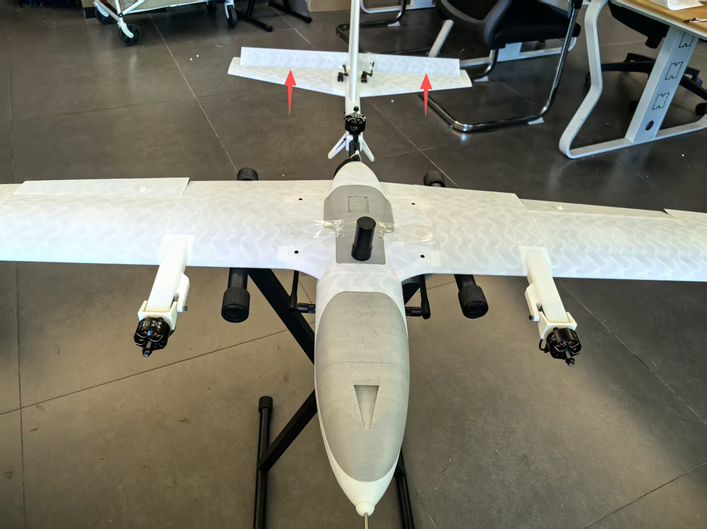

起飞前舵面偏转测试说明
- 起飞前需确认固定翼模式下舵面的偏转方向正确。一般情况下，飞机整机安装完成后，且未拆装机体、未更改遥控器配置或飞控的 actuator 参数，无需重复测试。但如果发生以下任一情况，必须重新进行地面测试：
- 飞控重新接线；
- 修改遥控器相关配置；
- 调整飞控中 actuator 相关参数。
详细检查步骤：
- 卸下螺旋桨（断电状态下操作）首先，在确保无人机断电的前提下，使用M8套筒或老虎钳卸下电机螺丝，依次拆除三个螺旋桨。 
-
上电并检查倾转电机复位将无人机固定放置于测试架上，并接通电源。上电后，双倾转电机应自动复位至垂直位置。过程中倾转舵机若有电流声属正常现象（舵机存在微小受力时，即会发出此声音），所用倾转舵机为高扭矩1 0kg级别。
-
检查电机转向（自稳模式）使用遥控器将飞行模式切换至“自稳模式（Stabilize）”，解开油门锁并后，按下解锁按钮。缓慢推动油门，检查各电机的转向是否正确：
-
从俯视角看，左前电机应顺时针旋转；
- 右前电机与尾部电机应逆时针旋转。 
-
倾转电机摆动方向检测（旋翼模式）在“自稳模式”下，左右推动偏航杆，观察左右倾转电机是否按照控制方向同步摆动，确保其动作方向正确。
 
 -
固定翼模式切换检测在旋翼模式下，缓慢推油门约1秒，然后拨动飞行模式转换开关，切换至“固定翼模式”。此时，两个倾转电机将缓慢过渡至约40°倾角位置，随后快速切换至水平。
 
 - 若电机无法顺利从40°倾角位置快速切换至水平，请对空速管进行人工吹气，模拟空速输入，协助完成切换。
-
舵面动作检测（固定翼模式）切换至固定翼模式后，将油门收至0位。维持“自稳模式”，操作遥控器检查各舵面动作：
-
左右打副翼杆，检查副翼是否正确偏转；
 
 -
上下打俯仰杆，检查升降舵动作是否正确； 
-
左右打偏航杆，检查方向舵是否响应正常。

-
机载offboard检测（固定翼模式）
-
在地面站电脑上，使用vscode ssh连接至树莓派机载电脑，打开/home/program/swiftwing文件夹目录；
- 开启一个终端，输入
roslaunch mavros swing.launch以启动mavros连接； - 再开启一个新终端，输入
rosrun uav_controller actuator_test.py启动机载舵面测试节点，根据终端中输出的舵面偏转指令，查看各舵面偏转情况是否正确。 - 检测完成 检查无误后，收油至0，拨动飞行转换按钮，切回多旋翼模式，待倾转电机复位至垂直方向后，将拨杆拨至锁定按钮。